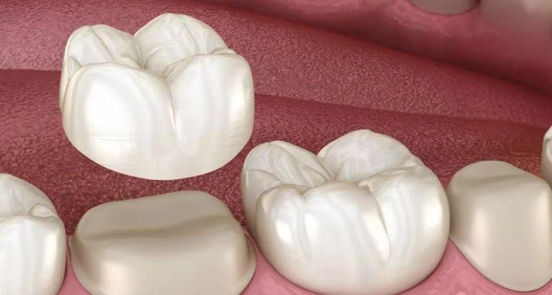
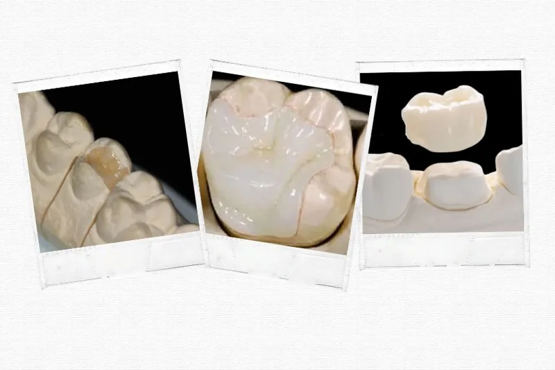

Когда встаёт вопрос о лечении кариеса, пациентам часто предлагают несколько вариантов восстановления зубов. Среди самых распространённых решений — вкладки (inlay), накладки (onlay) и коронки. Выбор между вкладками и накладками или коронками иногда может показаться сложным, особенно когда пациент не уверен, какой вариант подойдёт ему лучше всего. Каждый из этих методов имеет свои преимущества в зависимости от степени повреждения зуба и желаемого результата.
Благодаря современным достижениям стоматологии вкладкам и накладкам всё чаще отдают предпочтение, поскольку они позволяют сохранить больше собственных тканей зуба по сравнению с коронками, покрывающими зуб целиком. Если коронки служат полноценным защитным колпачком, то вкладки и накладки — более щадящий подход, направленный на конкретные участки зуба, нуждающиеся в восстановлении. Оба метода прочны и долговечны, но понимание разницы между вкладками и накладками и коронками — ключ к осознанному решению о здоровье ваших зубов.
В этой статье мы рассмотрим различия между этими методами и поможем вам выбрать лучший вариант для вашей ситуации. Хотите ли вы защитить зуб с минимальным повреждением или вам требуется более обширное восстановление — знание сильных сторон вкладок и накладок по сравнению с коронками поможет вам уверенно выбрать лечение.
Чем отличаются вкладки, накладки и коронки?
Для восстановления повреждённых зубов современная стоматология предлагает целый ряд эффективных решений. Среди них вкладки и накладки, а также коронки — распространённые методы, предназначенные для разной степени кариозного поражения или структурного повреждения зуба. Варианты различаются тем, какая часть зуба покрывается и сохраняется, а также степенью защиты. Понимание этих различий необходимо, чтобы осознанно выбрать подходящий именно вам метод. В следующих разделах мы рассмотрим, чем отличаются подходы к восстановлению зубов с помощью вкладок, накладок и коронок.
Вкладка (inlay)

Вкладка — это вид реставрации, используемый для устранения повреждений или кариеса в пределах бугорков зуба. Это изготовленная на заказ в зуботехнической лаборатории «пломба», которую обычно применяют при кариозных полостях или повреждениях, слишком больших для обычной пломбы, но недостаточно серьёзных, чтобы требовалась коронка. Вкладки восстанавливают здоровье и функцию зуба, плотно прилегая к повреждённому участку, и представляют собой прочное и эстетичное решение при средних и больших полостях или структурных дефектах.
Как проводится лечение вкладкой?
Перед установкой вкладки поражённый участок зуба нужно правильно обработать, чтобы он был чистым и без кариеса. Сначала стоматолог удаляет кариозные или повреждённые ткани и тщательно очищает участок. После подготовки зуба стоматолог снимает точные мерки или слепок полости. Затем они отправляются в зуботехническую лабораторию, где вкладку изготавливают по точным размерам подготовленного зуба. Вкладку обычно делают из композита, керамики или других прочных материалов, а её форму и цвет подбирают под естественный вид зубов пациента.
Когда вкладка готова, стоматолог аккуратно устанавливает её в подготовленную полость, добиваясь идеальной посадки. Обычно процедура проводится под местной анестезией, чтобы пациенту было комфортно. Вкладкам часто отдают предпочтение перед традиционными амальгамовыми пломбами (известными как серебряные пломбы) благодаря их эстетическим преимуществам и способности сохранить больше собственных тканей зуба. Поскольку вкладки располагаются в пределах жевательной поверхности зуба, они очень похожи на естественный зуб и помогают укрепить его, делая более прочным. Чтобы определить оптимальное лечение с учётом ваших индивидуальных потребностей, всегда рекомендуется проконсультироваться со стоматологом.
Накладка (onlay)

Накладка — это вид реставрации, используемый для восстановления структуры и функции повреждённого или поражённого кариесом зуба. Как и пломба, накладка устанавливается на зуб или в зуб, но покрывает бо́льшую площадь, включая один или несколько бугорков. Накладки восстанавливают форму и защищают поражённую часть зуба, представляя собой прочное решение, которое сохраняет естественную целостность зуба и улучшает его функцию. Этот метод часто применяют, когда повреждение слишком обширно для обычной пломбы, но полная коронка ещё не требуется.
Как проводится лечение накладкой?
Чтобы установить накладку, повреждённый или поражённый кариесом зуб сначала нужно правильно подготовить. Стоматолог удаляет кариозные ткани и тщательно очищает поражённый участок. После подготовки зуба снимаются точные мерки или слепок. Затем они отправляются в зуботехническую лабораторию, где накладку с большим вниманием к деталям изготавливают на заказ, как правило из композита, керамики или аналогичных материалов. Накладку делают так, чтобы она идеально подходила и соответствовала естественной форме и цвету зубов пациента.
Когда накладка готова, стоматолог аккуратно устанавливает её на подготовленный зуб, добиваясь бесшовной посадки. Во время процедуры часто используется местная анестезия, чтобы пациенту было комфортно. Накладки нередко выбирают вместо традиционных серебряных пломб, так как они дают более эстетичный и естественный результат. Они не только улучшают внешний вид зуба, но и помогают сохранить оставшиеся здоровые ткани и повышают прочность зуба. Поскольку накладки покрывают жевательную поверхность, они очень похожи на естественные зубы и долго служат. Чтобы определить оптимальный вариант лечения, обязательно проконсультируйтесь со стоматологом.
Коронка

Зубная коронка — это защитный колпачок, покрывающий повреждённый, поражённый кариесом или ослабленный зуб и восстанавливающий его форму, размер и функцию. Она надевается на всю видимую часть зуба над линией десны, обеспечивая как структурную опору, так и эстетическое улучшение. Коронки обычно используют, когда зуб слишком повреждён для пломбы, например после лечения каналов, или для покрытия зубного импланта. Их можно изготовить из разных материалов, включая металл, пластмассу или керамику, в зависимости от потребностей и предпочтений пациента.
При правильном уходе коронки служат от пяти до 15 лет, представляя собой прочное и надёжное решение для защиты и улучшения внешнего вида повреждённых зубов. Коронки не только восстанавливают функцию, но и помогают сохранить естественный вид улыбки, гармонично сочетаясь с соседними зубами.
Как проводится лечение коронкой?
Перед установкой коронки поражённый кариесом или повреждённый зуб нужно правильно подготовить. Стоматолог аккуратно удаляет ослабленные или кариозные участки и придаёт форму оставшейся части зуба. После подготовки снимается слепок зуба для создания точной модели. Эта модель отправляется в лабораторию, где коронку изготавливают с высокой точностью, чтобы она идеально подходила к зубу пациента и соответствовала соседним зубам. Коронки обычно делают из таких материалов, как металл, керамика или фарфор, выбирая их с учётом прочности и эстетических свойств.
Когда коронка готова, стоматолог аккуратно устанавливает её на зуб пациента, обеспечивая надёжную посадку. Для комфорта пациента во время процедуры обычно применяется местная анестезия. Коронки покрывают весь зуб, обеспечивая как естественный вид, так и функциональную опору. Помимо повышения прочности зуба, коронки помогают сохранить оставшиеся здоровые ткани. Благодаря естественному виду и более длительному сроку службы коронки — более прочное и эффективное решение по сравнению с традиционными пломбами. Стоматологи рекомендуют коронки с учётом потребностей пациента и состояния зуба, обеспечивая долгосрочную реставрацию. Если у вас есть проблемы с зубами, важно проконсультироваться со стоматологом, чтобы определить лучший вариант лечения.
Когда рекомендуют вкладку, накладку или коронку?

ВкладкаНакладкаКоронкаКогда предпочтительны вкладка и накладка?
Вкладки и накладки, как и коронки, обычно используются для восстановления ослабленных, поражённых кариесом или повреждённых зубов, возвращая им функцию и здоровье. Эти методы идеально подходят при средних и больших полостях: они позволяют удалить поражённые участки, сохранив как можно больше собственных тканей зуба, и каждый из них рассчитан на свою степень повреждения. Накладки, в частности, часто применяют при треснувших или сломанных зубах, заполняя повреждённые участки и восстанавливая исходную форму зуба.
Вкладки и накладки также эффективны, когда нужно заменить или укрепить существующие реставрации или пломбы. Они обеспечивают дополнительную прочность и более естественный вид, особенно когда требуется эстетическая коррекция передних зубов. Кроме того, вкладки и накладки могут служить временным решением после удаления зуба, заполняя промежуток до установки постоянной замены, например импланта.
Когда предпочтительны вкладка и накладка?
Коронки же используются, когда зуб слишком повреждён, чтобы вкладка или накладка могли обеспечить достаточную опору. Коронки покрывают всю видимую часть зуба, защищая его от дальнейших повреждений и восстанавливая как функцию, так и внешний вид. Их часто рекомендуют для зубов после лечения каналов, при значительных переломах или когда нужно заменить большие пломбы.
В конечном итоге стоматологи рекомендуют вкладки, накладки или коронки исходя из индивидуальных потребностей каждого пациента. Каждый вариант тщательно подбирается с учётом степени повреждения и индивидуальных стоматологических потребностей пациента. Если у вас болит зуб, есть кариес или повреждение, обязательно проконсультируйтесь со стоматологом, чтобы рассмотреть варианты лечения и составить план, соответствующий строению и состоянию ваших зубов.
Вкладка, накладка или коронка: сравнение
Преимущества вкладок / накладок:
Сохранение тканей зуба: вкладки и накладки — более щадящие методы, сохраняющие значительную часть собственных тканей зуба, поскольку восстанавливают только повреждённые или поражённые кариесом участки.
Естественный вид: они изготавливаются в соответствии с естественной формой и цветом ваших зубов, обеспечивая бесшовный эстетичный результат, который выглядит как естественная часть зуба.
Прочность: вкладки и накладки делают из прочных долговечных материалов, таких как керамика или композит, что обеспечивает прочность при сохранении естественного вида.
Минимальное препарирование: этот метод требует меньшего сошлифовывания зуба, чем коронки, что помогает сохранить прочность и целостность здоровых тканей.
Риски вкладок / накладок:
Вкладки и накладки в целом — безопасные и эффективные варианты лечения. Однако, как и любая медицинская процедура, они сопряжены с некоторыми рисками. В редких случаях у пациентов может возникнуть аллергическая реакция на используемые материалы. Это более вероятно у людей с повышенной чувствительностью к определённым компонентам стоматологических материалов. Другой возможный риск — временный дискомфорт или чувствительность в пролеченном зубе. Это может проявляться особенно при чистке зубов или употреблении горячей или холодной пищи, хотя такая чувствительность обычно проходит за период от нескольких дней до нескольких недель.
Кроме того, вкладки и накладки из композитной смолы со временем могут менять цвет, что может привести к визуальному несоответствию с естественным зубом. Такое эстетическое изменение может повлиять на общий вид реставрации и в будущем потребовать внимания для сохранения единообразного вида. Хотя эти риски встречаются нечасто, важно обсудить их со стоматологом, чтобы выбрать оптимальный подход к лечению.
Преимущества зубных коронок:
Полная защита зуба: коронки полностью покрывают зуб, обеспечивая надёжную защиту сильно повреждённым или поражённым кариесом зубам, а также зубам после лечения каналов.
Восстановление функции: коронки полностью восстанавливают функцию жевания и откусывания, позволяя зубу работать как естественный.
Прочность: коронки изготавливаются из очень прочных материалов, таких как фарфор, металл или керамика, и при правильном уходе дают долговечный результат.
Структурная целостность: после лечения каналов или обширного кариеса коронки обеспечивают необходимую опору, предотвращая дальнейшее разрушение или повреждение зуба.
Риски зубных коронок:
Зубные коронки — эффективный метод лечения, но у него есть некоторые недостатки. Одна из главных проблем — для установки коронки снимается естественная эмаль, а значит, зуб всегда будет нуждаться в покрытии. Со временем коронки также может потребоваться заменить из-за кариеса, трещин или расшатывания; при правильном уходе они обычно служат от пяти до десяти лет.
Другой риск — возможное повреждение нерва при снятии слишком большого количества тканей зуба, что иногда требует дальнейшего лечения, например лечения каналов. Кроме того, пациенты могут испытывать чувствительность к горячему или холодному, особенно если коронка сидит неидеально, хотя это можно устранить корректировкой.
Чем отличаются вкладка и накладка?
Вкладки и накладки — эффективные методы восстановления зубов, но они различаются местом применения. Вкладка используется для заполнения полостей в центральной части зуба, не доходя до внешних краёв. Она направлена на восстановление внутренней структуры зуба, не затрагивая внешние поверхности.
Накладка же покрывает бо́льшую площадь, доходя до краёв или жевательной поверхности зуба, чтобы восстановить повреждения или полости в этих областях. При более обширных повреждениях предпочтение отдают накладке, чтобы защитить и внешние границы зуба.
Сколько времени занимает установка вкладки/накладки?
Обычно лечение занимает два визита. На первом удаляются кариозные ткани, снимается слепок и ставится временная пломба. На втором изготовленную на заказ вкладку или накладку после проверки посадки полируют и фиксируют на зубе.